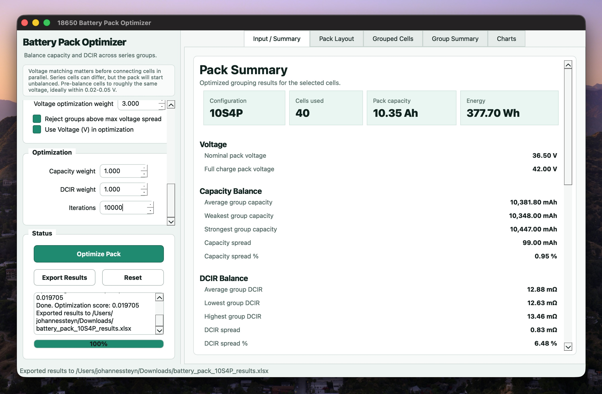
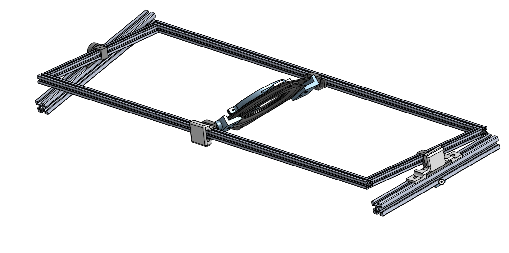
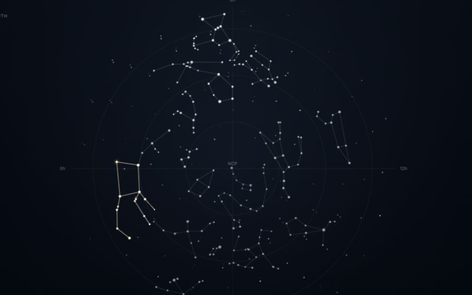
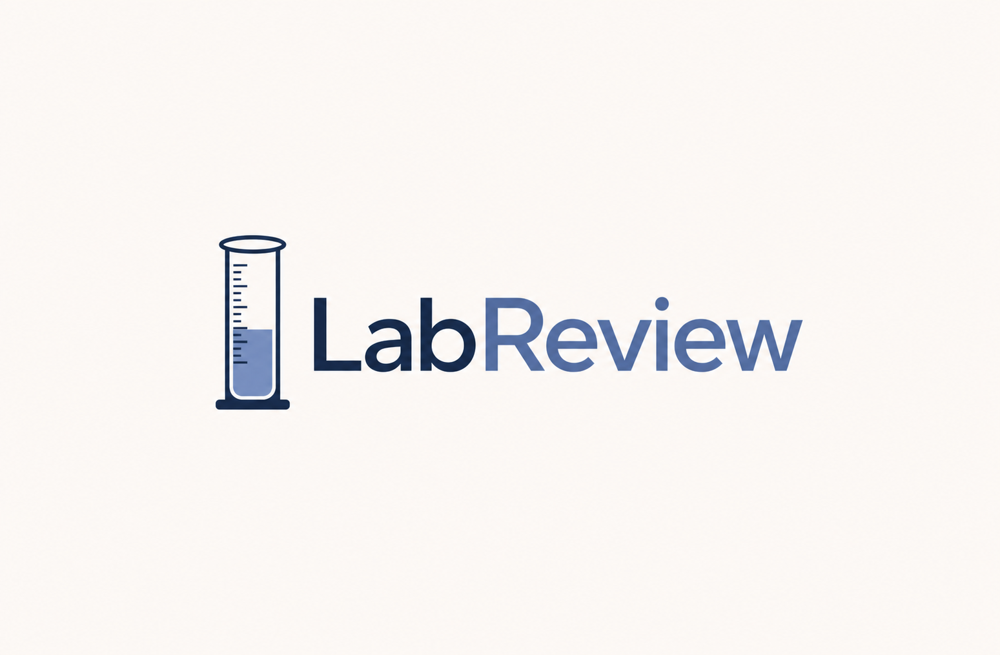
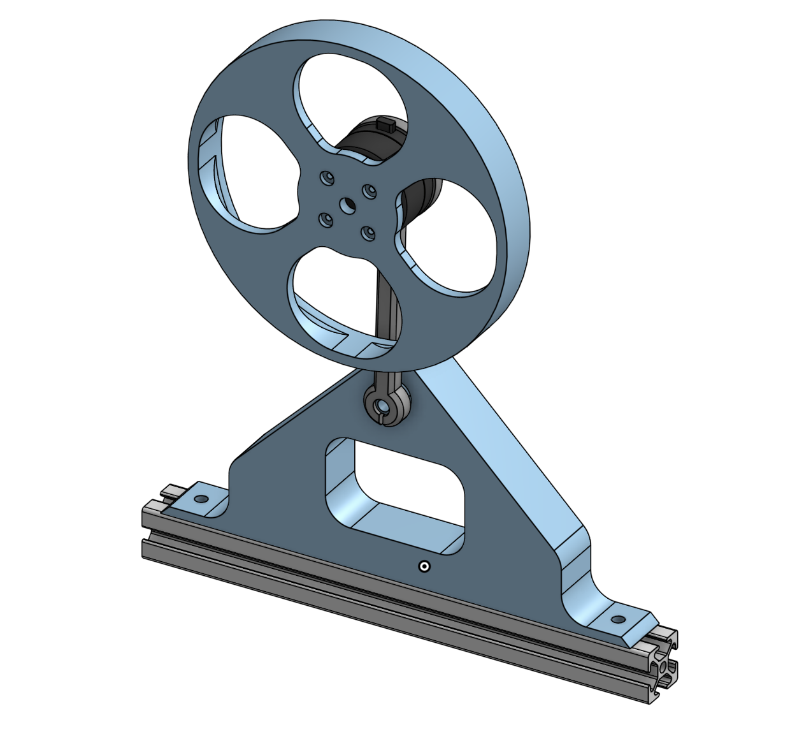
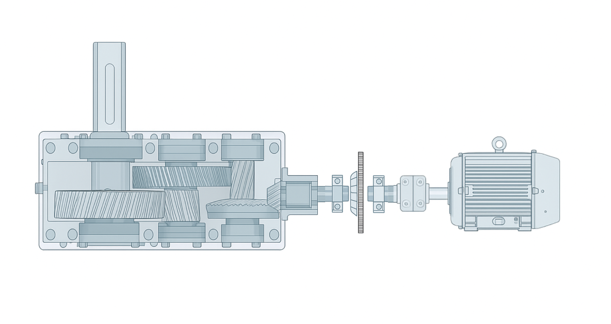
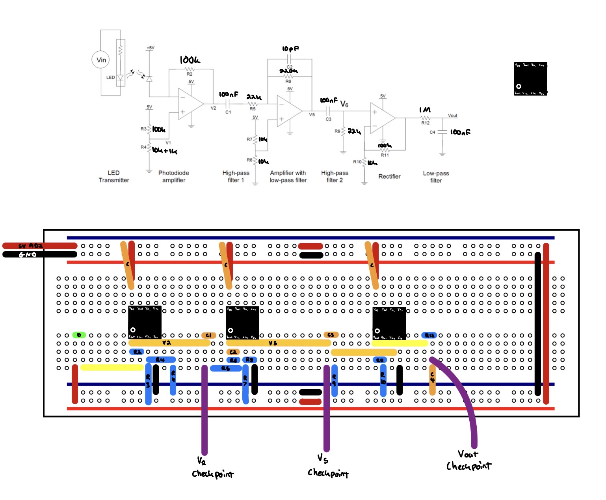
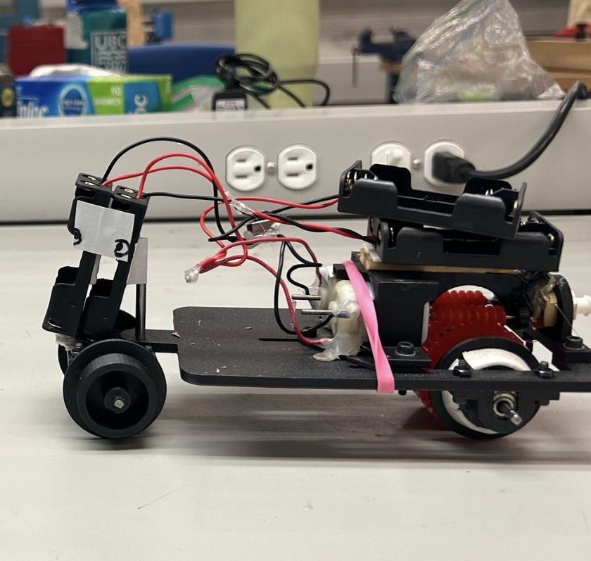
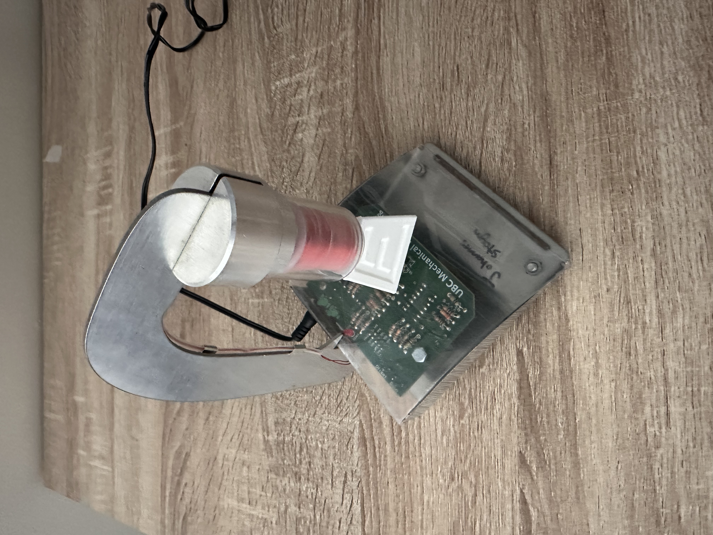
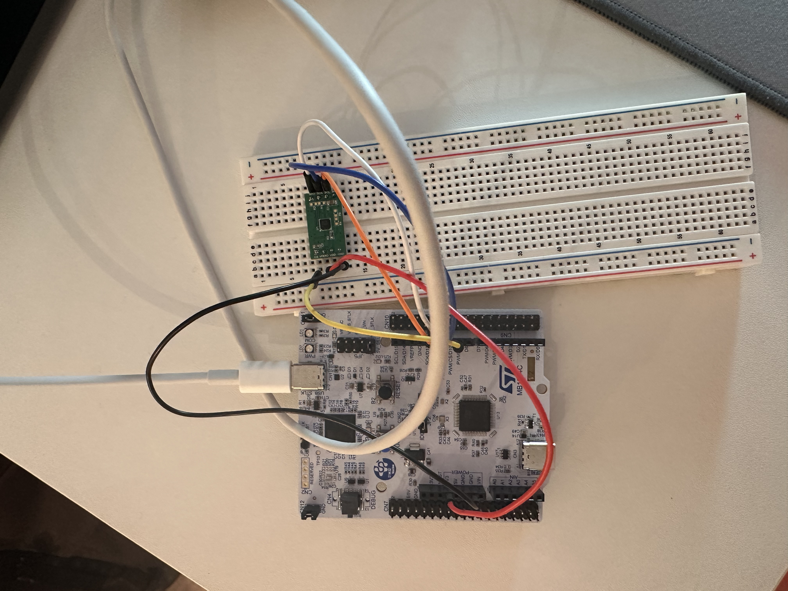

Battery Pack Optimizer GUI
A desktop tool for sorting measured 18650 cells into balanced battery pack groups, with configurable voltage-spread screening, pack visualization, and Excel export.

A custom lithium-ion battery pack project for an electric bike, focused on packaging, protection circuitry, and a serviceable enclosure.

A backyard swing made for the best niece in the world, designed with stability, durability, inspection, and maintenance in mind.

A 3-DOF gimbal stand with magnetic encoders used to help tune our TVC rocket's PID control.

An interactive guide to the northern and southern skies, using J2000 star positions, Stellarium-style constellation figures, sourced star data, and a learning quiz.

Using the open-source Orca Hand V1 and silicone-moulding research to explore affordable, dexterous hand manipulation.

A privacy-first educational prototype that organizes lab results, provides evidence-linked context, and prepares questions for a healthcare visit. It is not diagnostic.

A desktop tool for sorting measured 18650 cells into balanced battery pack groups, with configurable voltage-spread screening, pack visualization, and Excel export.

A compact gimbal for our TVC rocket that replaces linear actuators with a differential bevel gear drive, targeting lower weight and faster response.

A control-focused build exploring balance, feedback, and stability in an inverted pendulum system.

Layouts and diagnostic schematics for motors, pumps, and conveyors using SKF @ptitude, created to support faster diagnostics and improve client documentation quality.

A project focused on measuring distance and turning sensor data into a reliable, usable output.

A mobile system combining mechanical design, actuation, and control in one build.

An experiment in magnetic levitation, feedback, and stability through tuning and testing.

A reusable embedded driver for an MMC magnetometer with sensor setup, SPI communication, and data collection.